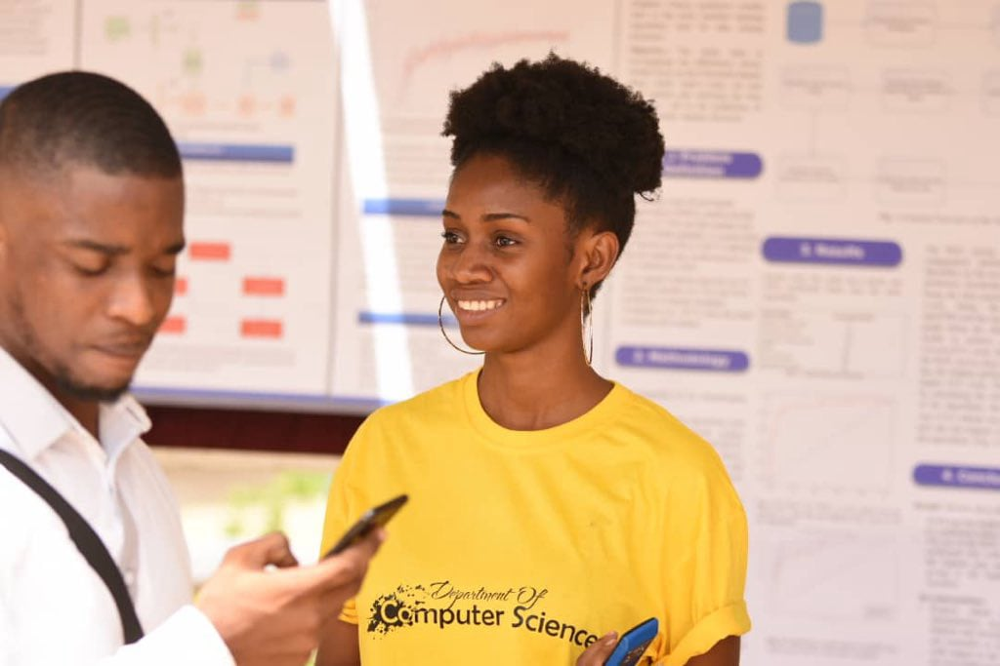

Enttry Requirements
Bachelor of Science in Mathematical Sciences
Mathematical Sciences (Actuarial Science, Biomathematics, Computer Science, Mathematics, Statistics, Physics)
Core: Credit passes in English, Core Mathematics, Integrated Science & Social Studies
Electives: Credit passes in Elective Mathematics and any other two subjects
Bachelor of Science in Information Technology
Core: Credit passes in English, Core Mathematics, Integrated Science & Social Studies Electives: Credit passes in Elective Mathematics and any other two subjects
Bachelor of Science in Information Technology
Core: Credit passes in English, Core Mathematics, Integrated Science & Social Studies
Electives: Credit passes in any three subjects
MSc Computer science
MPhil Computer science
Ph.D.
